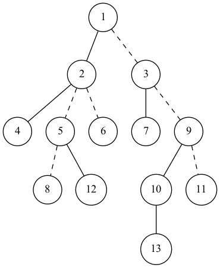
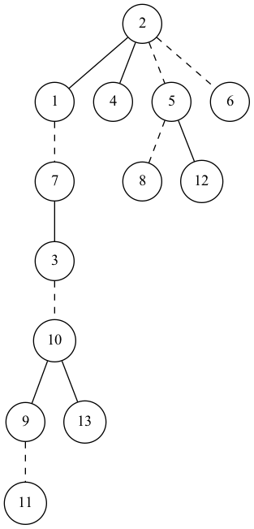

P3690 【模版】动态树（Link Cut Tree）
题面
解法
WC实在是太无聊子
今天是冬令营的第一天，我们来学习一下LCT吧（雾
引入&定义
Link Cut Tree，顾名思义，就是可以动态维护树上路径权值和、树上连边与断边操作的一种数据结构。
说到维护树上路径权值和，首先想到的应该就是树链剖分了，一般我们会选择用$O(n \log n)$的重链剖分。但是在动态树上，重链随时会改变，使用重链剖分就不行了。
这种情况下，我们不得不采用更为暴力的实链剖分。不考虑各儿子的子树大小，直接随便取一个儿子与父亲连接成一条链。于是树的形态变化就不会影响复杂度。不幸的是，这样的时间复杂度是$O(n^2)$的。
那么有没有什么数据结构可以很好地维护这样的实链呢？考虑到一条链上的节点深度都是递增的，不妨用Splay来维护每条链，而Splay的中序遍历就是整条链从头到尾的遍历。
如此我们可以将一棵树（森林）转化为若干条链，每条链用Splay来维护，我们称这样形成的树叫做辅助树（森林）。如下图中的例子（原树）：

其中实线表示的是随机分配的实边。
它的辅助树形态如下：

原树中的实链都在同一棵Splay中，而原树中的虚链只有儿子指向父亲，没有父亲指向儿子。
注意：辅助树的指向不等于原树中的指向，辅助树的根也不等于原树的根！
数组&函数
首先定义要用的数组：
fa[x]$x$在辅助树上的父节点ch[x][0/1]$x$在Splay中的左右儿子val[x]$x$的权值sum[x]$x$所在Splay的子树中的权值和tag[x]$x$节点的翻转标记（后面会提到）
需要的函数如下：
pushup(x)更新节点权值，不多说了pushdown(x)下传翻转标记pushall(x)将$x$在Splay中到根节点的路径全部下传标记connect(x, f, w)Splay操作：连接$x$为$f$的$w$儿子（$w=-1$表示虚边上的儿子）get(x)获取$x$是哪种儿子rotate(x)Splay操作：旋转splay(x)Splay操作：旋转到根access(x)LCT的核心：将$x$与根放到同一条实链中makeroot(x)将$x$变成原树的根split(x, y)将$x$到$y$的路径放到同一条实链中findroot(x)找到$x$所在实链的链头link(x, y)连接$x$到$y$cut(x, y)断开$x$到$y$
代码实现
pushup(x)
1 | // 更新sum |
pushdown(x)
1 | // 标记下传 |
pushall(x)
1 | // 递归实现即可 |
connect(x, f, w)
1 | // 压到一行 |
get(x)
1 | // 这个压不了 |
rotate(x)
和普通的splay不一样了，要判断虚边
1 | void rotate(int x) { |
splay(x)
第一行要先将上方的标记都下传
1 | void splay(int x) { |
access(x)
考虑将上图的节点$9$与根节点$1$打通。
因此要先将$9$转到当前splay的根（如图）。

而根据辅助树上链的性质，$9$、$13$和$10$不应该在一条链上，于是将$9$与$13$断开成虚链（从父亲中移除指向即可），同时将下方与$x$连接的另一棵splay连接（ch[x][1]:=pre）。
以此类推，一直往上重复此操作直到根。
1 | void access(int x) { |
makeroot(x)
让$x$成为新的原树的根。将$x$转到根节点的splay中，然后让$x$成为根节点。
但是这样一来，$x$所在的splay树就乱掉了，因为无法再保证深度递增。同时发现由于在access(x)之后$x$的右儿子被清空了，所以将该splay翻转就得到新的按深度递增的splay（仔细想想是不是）。于是代码就出来了：
1 | void makeroot(int x) { |
split(x, y)
将$x$成为原树的根（同时是该splay的深度最小节点），再将$y$与$x$打通，旋转$y$到该splay的根，显然$y$的当前$sum$值就是$x$到$y$路径的$sum$。
1 | void split(int x, int y) { |
findroot(x)
将$x$与根打通（access(x)），显然splay最左边的节点就是根了。
1 | int findroot(int x) { |
link(x, y)
先判断$x$与$y$是否联通，类似并查集的方法。
然后$y$转到根，将$x$指向$y$（注意不要让父亲$y$指向儿子$x$）。
1 | bool link(int x, int y) { |
cut(x, y)
还是先判断$x$与$y$在同一个联通块。
将$x$到$y$的路径取出，并判断$x$与$y$是否直接连接。
如果直接连接，直接断开即可。
1 | bool cut(int x, int y) { |
至此，LCT的各函数实现就讲完了，下面放出一个封装好的模版：
模版
理论时间复杂度是$O(n \log n)$（我也不会证明），但是常数极大（听说能有$20$？），慎用。
1 | const int MAXN = 1e5 + 10; |
AC代码
1 | /** |